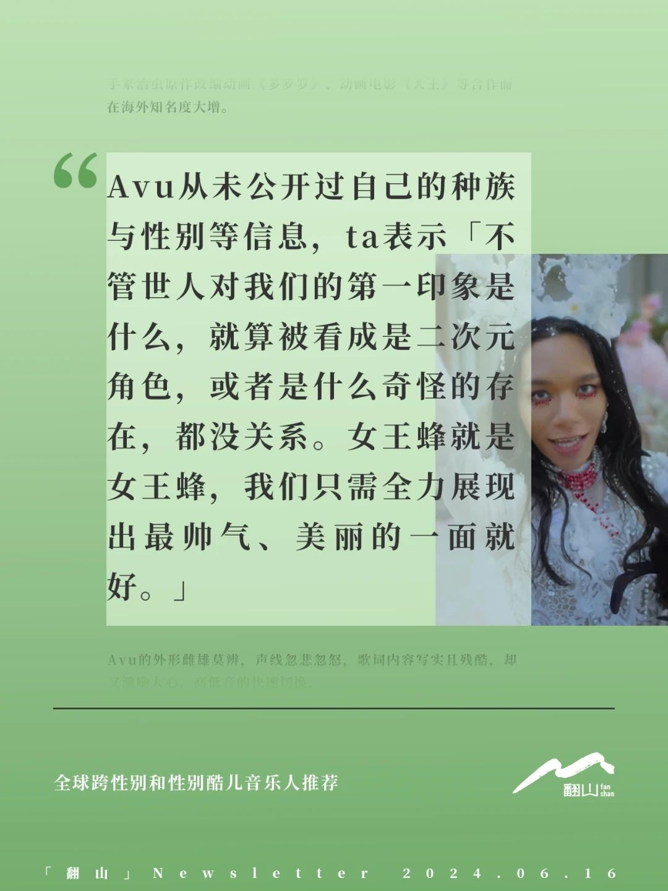
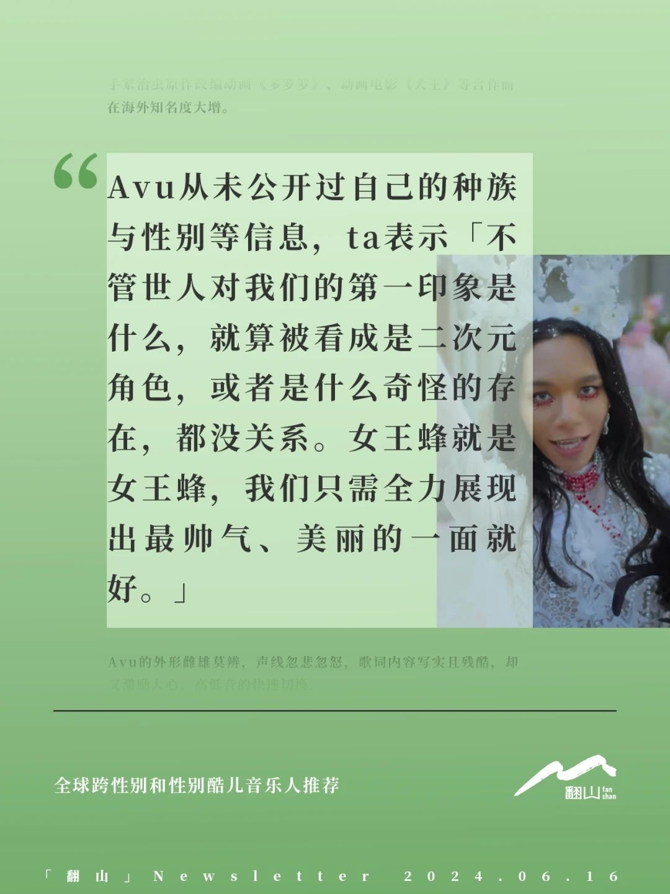
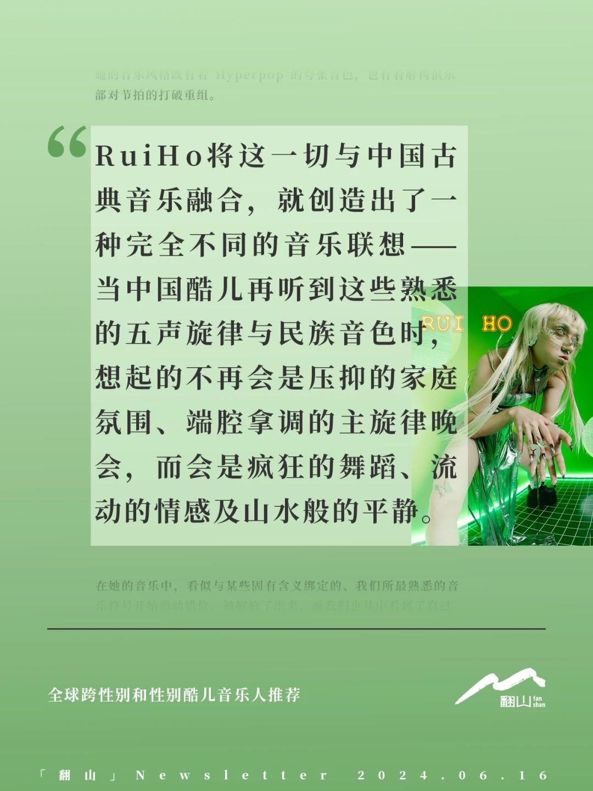
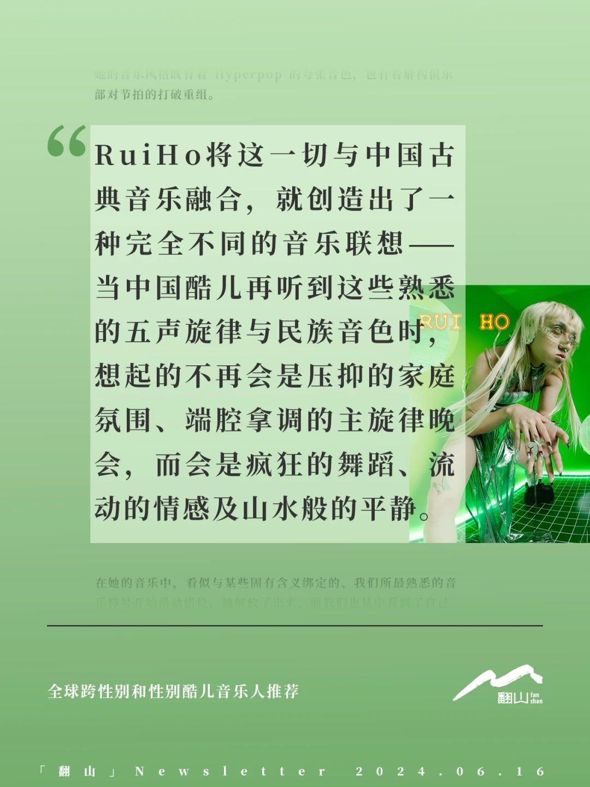

 



「翻山」Newsletter切片 ｜ 全球跨性别和性别酷儿音乐人推荐
“ta们不止是音乐人，也是反抗压迫中重要的一部分，承载了许多酷儿伙伴的情感”，继暴女乐队推荐之后，作者月亮和思邪领着我们一起发现在二元性别霸权的秩序中存在着的这样一些跨性别和性别酷儿音乐人的身影，ta们使用多元的代词：she/they、they/them、she/it等等。ta们的音乐与故事，启发和鼓励了未来的一代——打破性别界限，追求真实自我，表达自己情感。
为了和更多伙伴分享，我们精选了文章的内容切片，方便大家阅读和传播，也欢迎你订阅「翻山」，获取更丰富深入的内容。在正文中我们推荐了更多的跨性别和性别酷儿音乐人哦～
欢迎登陆「翻山」中转站查看如何订阅
👉 https://fanshan.flowus.cn/ 👈
⛰️「翻山」以内容为桥梁，架设性别平等在中国大陆的参与渠道。「翻山」将主要收入投资至中国大陆的性别团队，让支持性别平等的解决方案得以可持续创新与延续。
切片视觉｜歪